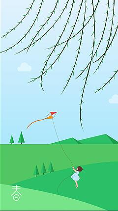

春天，又称春季，是四季中的第一个季节，指立春至立夏期间，含节气有立春、雨水、惊蛰、春分、清明、谷雨。是万物复苏的季节。在北半球的公历为3月～5月 [1] ，而南半球（如澳大利亚）则是9月下旬～12月下旬。气象学上以连续5天平均气温在10℃以上为春季的开始。春天气候温暖适中，中国内陆大部分地区有降雨，万物生机萌发，气候多变，乍暖还寒。
春三月，此谓发陈，天地俱生，万物以荣，夜卧早起，广（多）步（走）于庭，被发缓形（意喻不受束缚），以使志生。生而勿杀，予而勿夺，赏而勿罚，此春气之应，养生之道也。逆之则伤肝，夏为寒变，奉长者少。
春阳：因春天阳光温和明媚，令人神往陶醉，故而得名；陈子昂诗“白日每不归，春阳时暮矣”。就是描写春阳的诗句。
阳春：春天的美称。唐朝诗人李白诗中就有“阳春召我以烟景”的诗句。
芳春：因春天草木萌动，百草新生，大地草绿如茵，繁花似锦，故而得名。陆机诗“烈心厉劲秋，丽服鲜芳春”。将芳春的特点，写得入景入神。
春三月，此谓发陈，天地俱生，万物以荣，夜卧早起，广（多）步（走）于庭，被发缓形（意喻不受束缚），以使志生。生而勿杀，予而勿夺，赏而勿罚，此春气之应，养生之道也。逆之则伤肝，夏为寒变，奉长者少。
春阳：因春天阳光温和明媚，令人神往陶醉，故而得名；陈子昂诗“白日每不归，春阳时暮矣”。就是描写春阳的诗句。
阳春：春天的美称。唐朝诗人李白诗中就有“阳春召我以烟景”的诗句。
芳春：因春天草木萌动，百草新生，大地草绿如茵，繁花似锦，故而得名。陆机诗“烈心厉劲秋，丽服鲜芳春”。将芳春的特点，写得入景入神。